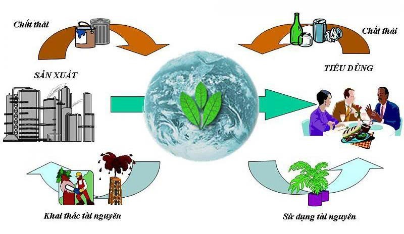

Vậy môi trường là gì?
Môi trường chính là không gian sống của con người và các loài sinh vật. Đây chính là nơi cung cấp những tài nguyên thiên nhiên như rừng, khoáng sản, động thực vật quý hiếm,… và những yếu tố vật chất nhân tạo quan hệ mặt thiết với nhau, phục vụ, ảnh hưởng tới đời sống, quá trình tồn tại và phát triển của cuộc sống của con người. Nhưng đây cũng chính là nơi chứa những chất thải mà con người tạo ra.
Môi trường tự nhiên bao gồm các nhân tố thiên nhiên như vật lý, hóa học, sinh học, tồn tại ngoài ý muốn của con người, ít nhiều cũng sẽ chịu tác động của con người. Đây là nơi cung cấp cho ta không khí để thở, đất để xây dựng nhà cửa, trồng cấy, chăn nuôi, cung cấp cho con người các loại tài nguyên khoáng sản cần cho sản xuất, tiêu thụ và là nơi chứa đựng, đồng hóa các chất thải, nơi giải trí…
Môi trường tự nhiên bao gồm các nhân tố thiên nhiên như vật lý, hóa học, sinh học, tồn tại ngoài ý muốn của con người, ít nhiều cũng sẽ chịu tác động của con người. Đây là nơi cung cấp cho ta không khí để thở, đất để xây dựng nhà cửa, trồng cấy, chăn nuôi, cung cấp cho con người các loại tài nguyên khoáng sản cần cho sản xuất, tiêu thụ và là nơi chứa đựng, đồng hóa các chất thải, nơi giải trí…
Môi trường tự nhiên bao gồm các nhân tố thiên nhiên như vật lý, hóa học, sinh học, tồn tại ngoài ý muốn của con người, ít nhiều cũng sẽ chịu tác động của con người. Đây là nơi cung cấp cho ta không khí để thở, đất để xây dựng nhà cửa, trồng cấy, chăn nuôi, cung cấp cho con người các loại tài nguyên khoáng sản cần cho sản xuất, tiêu thụ và là nơi chứa đựng, đồng hóa các chất thải, nơi giải trí…
Môi trường tự nhiên bao gồm các nhân tố thiên nhiên như vật lý, hóa học, sinh học, tồn tại ngoài ý muốn của con người, ít nhiều cũng sẽ chịu tác động của con người. Đây là nơi cung cấp cho ta không khí để thở, đất để xây dựng nhà cửa, trồng cấy, chăn nuôi, cung cấp cho con người các loại tài nguyên khoáng sản cần cho sản xuất, tiêu thụ và là nơi chứa đựng, đồng hóa các chất thải, nơi giải trí…
1. Phân loại môi trường
Môi trường tự nhiên bao gồm các nhân tố thiên nhiên như vật lý, hóa học, sinh học, tồn tại ngoài ý muốn của con người, ít nhiều cũng sẽ chịu tác động của con người. Đây là nơi cung cấp cho ta không khí để thở, đất để xây dựng nhà cửa, trồng cấy, chăn nuôi, cung cấp cho con người các loại tài nguyên khoáng sản cần cho sản xuất, tiêu thụ và là nơi chứa đựng, đồng hóa các chất thải, nơi giải trí…

2. Vai trò của môi trường
Thứ nhất, môi trường cung cấp các nguồn tài nguyên thiên nhiên cần thiết như đất nước, rừng, khoáng sản, vệ sinh biển cho cuộc sống và cách hoạt động sản xuất.
Thứ hai, môi trường chứa đựng các chất thải và ô nhiễm từ các hoạt động sản xuất và sinh sống của con người.
Thứ ba, môi trường cung cấp các dịch vụ môi trường hay hệ sinh thái (đa dạng, toàn vẹn hệ sinh thái, và ngăn cản bức xạ tai cực tím) giúp hỗ trợ các sự sống trên Trái Đất mà không cần bất kỳ hành động của con người.
Thứ tư, môi trường là nơi tạo nên các giá trị tâm lý, thẩm mỹ và tinh thần của môi trường.